Java, .NET, Python, JavaScript e React letti con la stessa griglia.
Slide 17. Una griglia comune per il confronto
Durata prevista: 10 minuti.
Modello di esecuzione
Punti di forza dell'ecosistema
Contesti tipici
Qualità operative
Rischi e competenze
Schema grafico: stessi criteri, tecnologie diverse
Una griglia di confronto illustrativa, senza valori: le colonne sono le quattro tecnologie (Java, .NET, PY per Python, JS per JavaScript) e le righe sono quattro criteri: runtime, ecosistema, fit (adeguatezza al contesto) e rischi. Ogni cella contiene solo un pallino colorato: la griglia mostra la struttura del confronto, che va compilata con pesi ed evidenze.
Didascalia sotto la griglia: pesi + evidenze → scelta motivata.
Slide 18. Come funziona Java: dal sorgente al codice macchina
Durata prevista: 15 minuti.
Schema: dal sorgente al codice macchina
Cinque riquadri in sequenza da sinistra a destra, ciascuno con un titolo e un esempio, collegati da frecce:
Sorgente: file .java.
Compilatore: javac.
Bytecode: file .class.
JVM: carica (load), verifica (verify) ed esegue (execute).
Macchina: codice nativo.
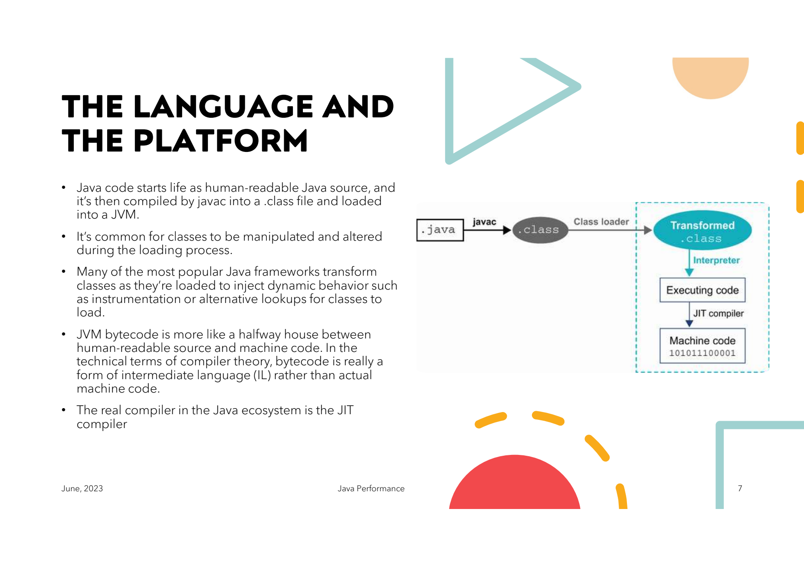
Immagine: Slide del corso Java Performance: "The language and the platform", con diagramma da sorgente .java a codice macchina.
Descrizione. Screenshot di una slide in inglese del corso "Java Performance" (giugno 2023, pagina 7). A sinistra un titolo e cinque punti elenco; a destra un diagramma orizzontale. Il diagramma parte da un file sorgente ".java", che il compilatore javac trasforma in un file ".class". Il class loader carica il file ".class" in un riquadro tratteggiato che rappresenta la JVM: lì diventa una ".class" trasformata; l'interprete la esegue ("Executing code"); il compilatore JIT produce infine codice macchina, mostrato come una sequenza di cifre binarie.
Testo contenuto nell’immagine
THE LANGUAGE AND THE PLATFORM
Java code starts life as human-readable Java source, and it's then compiled by javac into a .class file and loaded into a JVM.
It's common for classes to be manipulated and altered during the loading process.
Many of the most popular Java frameworks transform classes as they're loaded to inject dynamic behavior such as instrumentation or alternative lookups for classes to load.
JVM bytecode is more like a halfway house between human-readable source and machine code. In the technical terms of compiler theory, bytecode is really a form of intermediate language (IL) rather than actual machine code.
The real compiler in the Java ecosystem is the JIT compiler.
Slide 19. Bytecode: il contratto portabile della piattaforma Java
Durata prevista: 15 minuti.
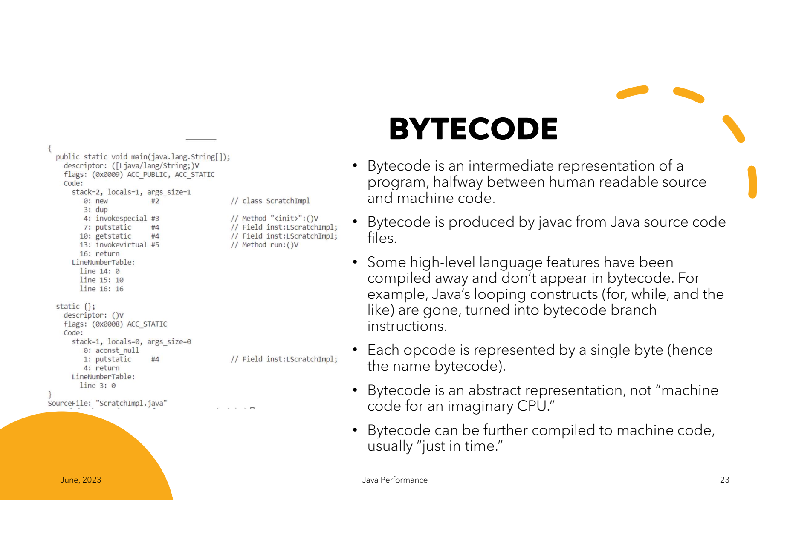
Immagine: Slide del corso Java Performance: "Bytecode", con un listato di bytecode a sinistra e sei punti elenco a destra.
Descrizione. Screenshot di una slide in inglese del corso "Java Performance" (pagina 23). A sinistra c'è un listato di testo a spaziatura fissa con l'output di un disassemblatore di bytecode Java per la classe ScratchImpl: il metodo main e un blocco static. A destra il titolo "BYTECODE" e sei punti elenco che spiegano che cos'è il bytecode.
Testo contenuto nell’immagine
BYTECODE
Listato a sinistra (output del disassemblatore):
{
public static void main(java.lang.String[]);
descriptor: ([Ljava/lang/String;)V
flags: (0x0009) ACC_PUBLIC, ACC_STATIC
Code:
stack=2, locals=1, args_size=1
0: new #2 // class ScratchImpl
3: dup
4: invokespecial #3 // Method "<init>":()V
7: putstatic #4 // Field inst:LScratchImpl;
10: getstatic #4 // Field inst:LScratchImpl;
13: invokevirtual #5 // Method run:()V
16: return
LineNumberTable:
line 14: 0
line 15: 10
line 16: 16
static {};
descriptor: ()V
flags: (0x0008) ACC_STATIC
Code:
stack=1, locals=0, args_size=0
0: aconst_null
1: putstatic #4 // Field inst:LScratchImpl;
4: return
LineNumberTable:
line 3: 0
}
SourceFile: "ScratchImpl.java"
Punti elenco a destra:
Bytecode is an intermediate representation of a program, halfway between human readable source and machine code.
Bytecode is produced by javac from Java source code files.
Some high-level language features have been compiled away and don't appear in bytecode. For example, Java's looping constructs (for, while, and the like) are gone, turned into bytecode branch instructions.
Each opcode is represented by a single byte (hence the name bytecode).
Bytecode is an abstract representation, not "machine code for an imaginary CPU."
Bytecode can be further compiled to machine code, usually "just in time."
Piè di pagina: June, 2023 · Java Performance · 23
Tre idee
È un linguaggio intermedio, non codice macchina
Ogni opcode occupa un byte
javap permette di disassemblare i file .class
Il JIT ottimizza a runtime i metodi più usati
Write once → JVM compatibile → run
Java Performance Course v1, pp. 8, 19 e 23
Slide 20. Dentro la JVM: caricare, verificare, eseguire, ottimizzare
Durata prevista: 18 minuti.
Schema: le quattro fasi dentro la JVM
Quattro riquadri in sequenza da sinistra a destra, collegati da frecce:
Class loading: trova classi e dipendenze.
Linking: verifica, prepara e risolve.
Interpreter: esegue subito il bytecode.
JIT: compila i metodi “caldi”, cioè eseguiti più spesso.
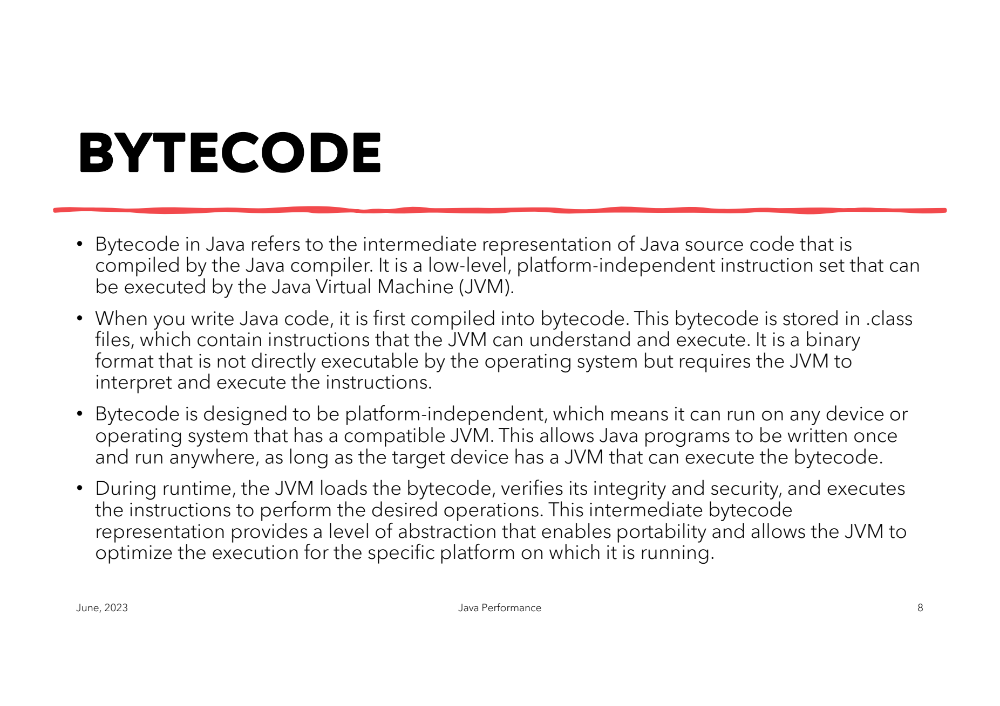
Immagine: Slide del corso Java Performance: "Bytecode", solo testo, quattro paragrafi sul bytecode Java.
Descrizione. Screenshot di una slide in inglese del corso "Java Performance" (pagina 8) composta solo da testo: un titolo e quattro paragrafi puntati che definiscono il bytecode Java e il suo ruolo nella portabilità. Non contiene figure.
Testo contenuto nell’immagine
BYTECODE
Bytecode in Java refers to the intermediate representation of Java source code that is compiled by the Java compiler. It is a low-level, platform-independent instruction set that can be executed by the Java Virtual Machine (JVM).
When you write Java code, it is first compiled into bytecode. This bytecode is stored in .class files, which contain instructions that the JVM can understand and execute. It is a binary format that is not directly executable by the operating system but requires the JVM to interpret and execute the instructions.
Bytecode is designed to be platform-independent, which means it can run on any device or operating system that has a compatible JVM. This allows Java programs to be written once and run anywhere, as long as the target device has a JVM that can execute the bytecode.
During runtime, the JVM loads the bytecode, verifies its integrity and security, and executes the instructions to perform the desired operations. This intermediate bytecode representation provides a level of abstraction that enables portability and allows the JVM to optimize the execution for the specific platform on which it is running.
Piè di pagina: June, 2023 · Java Performance · 8
Didascalia. BYTECODE VERIFICATO
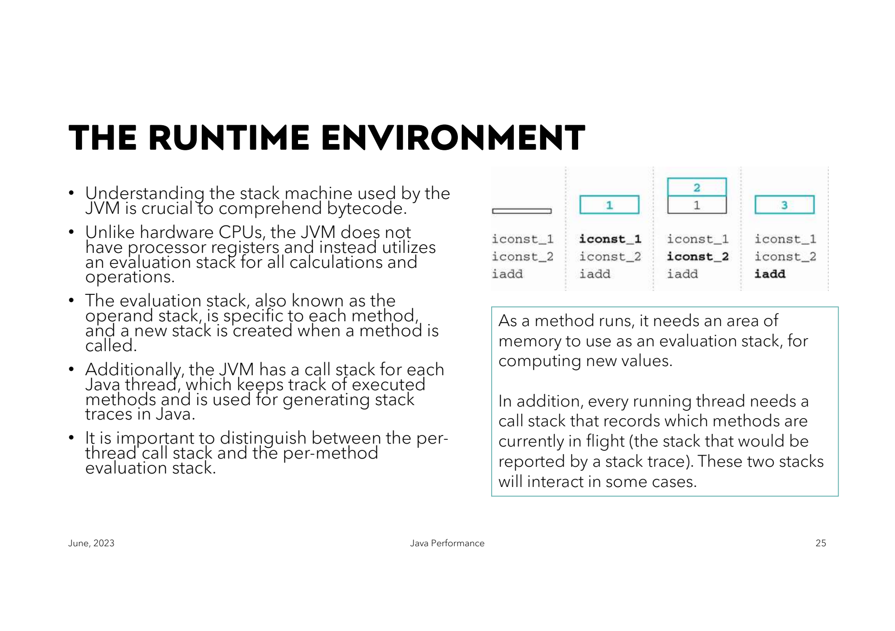
Immagine: Slide del corso Java Performance: "The runtime environment", con il funzionamento dello stack di valutazione in quattro passi.
Descrizione. Screenshot di una slide in inglese del corso "Java Performance" (pagina 25). A sinistra cinque punti elenco sulla macchina a stack della JVM. A destra, in alto, una figura con quattro colonne affiancate: in ognuna c'è lo stato dello stack di valutazione e sotto l'elenco delle istruzioni "iconst_1, iconst_2, iadd" con l'istruzione corrente in grassetto. Nella prima colonna lo stack è vuoto; dopo iconst_1 contiene il valore 1; dopo iconst_2 contiene 2 sopra 1; dopo iadd contiene solo 3, la somma. In basso a destra un riquadro con due paragrafi di spiegazione.
Testo contenuto nell’immagine
THE RUNTIME ENVIRONMENT
Understanding the stack machine used by the JVM is crucial to comprehend bytecode.
Unlike hardware CPUs, the JVM does not have processor registers and instead utilizes an evaluation stack for all calculations and operations.
The evaluation stack, also known as the operand stack, is specific to each method, and a new stack is created when a method is called.
Additionally, the JVM has a call stack for each Java thread, which keeps track of executed methods and is used for generating stack traces in Java.
It is important to distinguish between the per-thread call stack and the per-method evaluation stack.
Figura: quattro stati dello stack. Stack vuoto; poi 1 (dopo iconst_1); poi 2 e 1 (dopo iconst_2); poi 3 (dopo iadd). Sotto ogni stato: iconst_1, iconst_2, iadd.
Riquadro: As a method runs, it needs an area of memory to use as an evaluation stack, for computing new values. In addition, every running thread needs a call stack that records which methods are currently in flight (the stack that would be reported by a stack trace). These two stacks will interact in some cases.
Piè di pagina: June, 2023 · Java Performance · 25
Didascalia. STACK PER THREAD · OPERAND STACK PER METODO
Java Performance Course v1, pp. 8-13 e 25
Slide 21. Garbage Collector: recuperare memoria senza gestione manuale
Durata prevista: 18 minuti.
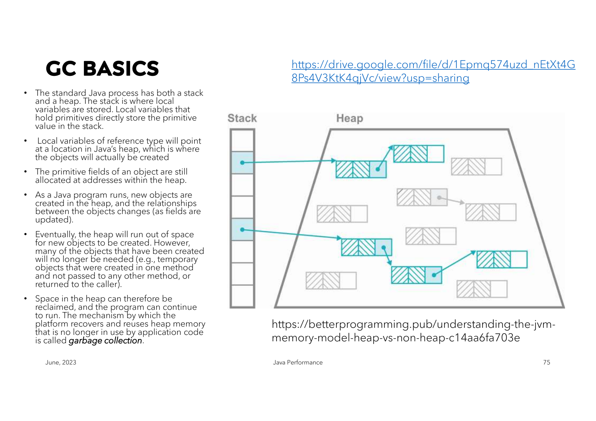
Immagine: Slide del corso Java Performance: "GC basics", con diagramma di stack e heap e riferimenti agli oggetti.
Descrizione. Screenshot di una slide in inglese del corso "Java Performance" (pagina 75). A sinistra sei punti elenco sul garbage collector. A destra un diagramma con due aree: a sinistra "Stack", una colonna di caselle di cui due colorate in azzurro; a destra "Heap", un trapezio che contiene tanti piccoli oggetti. Dalle due caselle dello stack partono frecce verso oggetti dell'heap, e da questi altre frecce portano ad altri oggetti: gli oggetti raggiungibili sono colorati in azzurro, quelli non più raggiungibili sono in grigio chiaro e sono quelli che il garbage collector può liberare. In alto a destra e in basso compaiono due indirizzi web.
Testo contenuto nell’immagine
GC BASICS
The standard Java process has both a stack and a heap. The stack is where local variables are stored. Local variables that hold primitives directly store the primitive value in the stack.
Local variables of reference type will point at a location in Java's heap, which is where the objects will actually be created.
The primitive fields of an object are still allocated at addresses within the heap.
As a Java program runs, new objects are created in the heap, and the relationships between the objects changes (as fields are updated).
Eventually, the heap will run out of space for new objects to be created. However, many of the objects that have been created will no longer be needed (e.g., temporary objects that were created in one method and not passed to any other method, or returned to the caller).
Space in the heap can therefore be reclaimed, and the program can continue to run. The mechanism by which the platform recovers and reuses heap memory that is no longer in use by application code is called garbage collection.
Diagramma: etichette "Stack" e "Heap".
Indirizzi web nell'immagine: https://drive.google.com/file/d/1Epmq574uzd_nEtXt4G8Ps4V3KtK4qjVc/view?usp=sharing e https://betterprogramming.pub/understanding-the-jvm-memory-model-heap-vs-non-heap-c14aa6fa703e
Piè di pagina: June, 2023 · Java Performance · 75
STACK: variabili locali e riferimenti
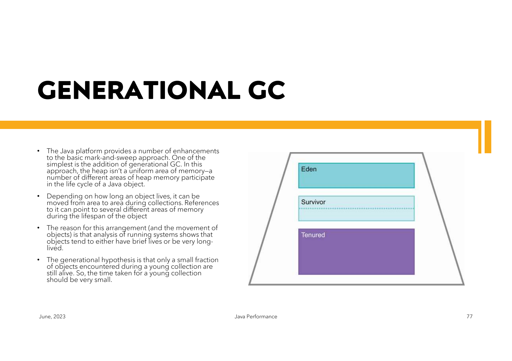
Immagine: Slide del corso Java Performance: "Generational GC", con l'heap diviso in Eden, Survivor e Tenured.
Descrizione. Screenshot di una slide in inglese del corso "Java Performance" (pagina 77). A sinistra quattro punti elenco sul garbage collector generazionale. A destra un trapezio, che rappresenta l'heap, con tre riquadri sovrapposti dall'alto in basso: "Eden" in azzurro, "Survivor" in azzurro chiaro con una linea tratteggiata a metà, "Tenured" in viola e più grande.
Testo contenuto nell’immagine
GENERATIONAL GC
The Java platform provides a number of enhancements to the basic mark-and-sweep approach. One of the simplest is the addition of generational GC. In this approach, the heap isn't a uniform area of memory—a number of different areas of heap memory participate in the life cycle of a Java object.
Depending on how long an object lives, it can be moved from area to area during collections. References to it can point to several different areas of memory during the lifespan of the object.
The reason for this arrangement (and the movement of objects) is that analysis of running systems shows that objects tend to either have brief lives or be very long-lived.
The generational hypothesis is that only a small fraction of objects encountered during a young collection are still alive. So, the time taken for a young collection should be very small.
Diagramma dell'heap, dall'alto in basso: Eden, Survivor, Tenured.
Piè di pagina: June, 2023 · Java Performance · 77
HEAP: Eden → Survivor → Old generation
Java Performance Course v1, pp. 74-78
Slide 22. G1: regioni, generazioni e pause controllabili
Durata prevista: 15 minuti.
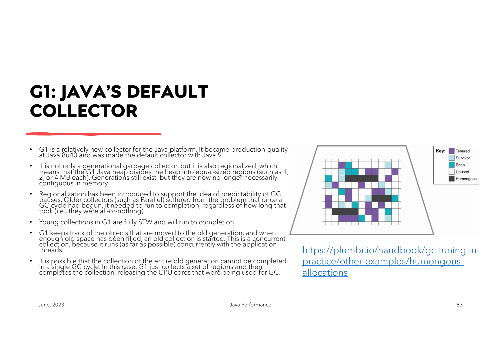
Immagine: Slide del corso Java Performance: "G1: Java's default collector", con la griglia di regioni dell'heap e la legenda dei colori.
Descrizione. Screenshot di una slide in inglese del corso "Java Performance" (pagina 83). A sinistra sei punti elenco sul collector G1. A destra un trapezio che rappresenta l'heap diviso in una griglia di piccole regioni quadrate di dimensione uguale. Le regioni sono colorate secondo la legenda "Key": viola per Tenured, azzurro chiaro per Survivor, azzurro intenso per Eden, bianco per Unused, grigio scuro per Humongous. Le regioni dello stesso tipo non sono contigue: sono sparse nella griglia; le regioni Humongous occupano più caselle adiacenti in orizzontale. Sotto la figura c'è un indirizzo web.
Testo contenuto nell’immagine
G1: JAVA'S DEFAULT COLLECTOR
G1 is a relatively new collector for the Java platform. It became production-quality at Java 8u40 and was made the default collector with Java 9
It is not only a generational garbage collector, but it is also regionalized, which means that the G1 Java heap divides the heap into equal-sized regions (such as 1, 2, or 4 MB each). Generations still exist, but they are now no longer necessarily contiguous in memory.
Regionalization has been introduced to support the idea of predictability of GC pauses. Older collectors (such as Parallel) suffered from the problem that once a GC cycle had begun, it needed to run to completion, regardless of how long that took (i.e., they were all-or-nothing).
Young collections in G1 are fully STW and will run to completion
G1 keeps track of the objects that are moved to the old generation, and when enough old space has been filled, an old collection is started. This is a concurrent collection, because it runs (as far as possible) concurrently with the application threads.
It is possible that the collection of the entire old generation cannot be completed in a single GC cycle. In this case, G1 just collects a set of regions and then completes the collection, releasing the CPU cores that were being used for GC.
Legenda (Key): Tenured, Survivor, Eden, Unused, Humongous.
Indirizzo web nell'immagine: https://plumbr.io/handbook/gc-tuning-in-practice/other-examples/humongous-allocations
Piè di pagina: June, 2023 · Java Performance · 83
Come leggerlo
Heap diviso in regioni di pari dimensione
Generazioni non necessariamente contigue
Young collection in Stop-the-World
Old collection per quanto possibile concorrente
Obiettivo: maggiore prevedibilità delle pause
Java Performance Course v1, pp. 80-85
Slide 23. VisualVM: osservare la JVM mentre l'applicazione vive
Durata prevista: 20 minuti.
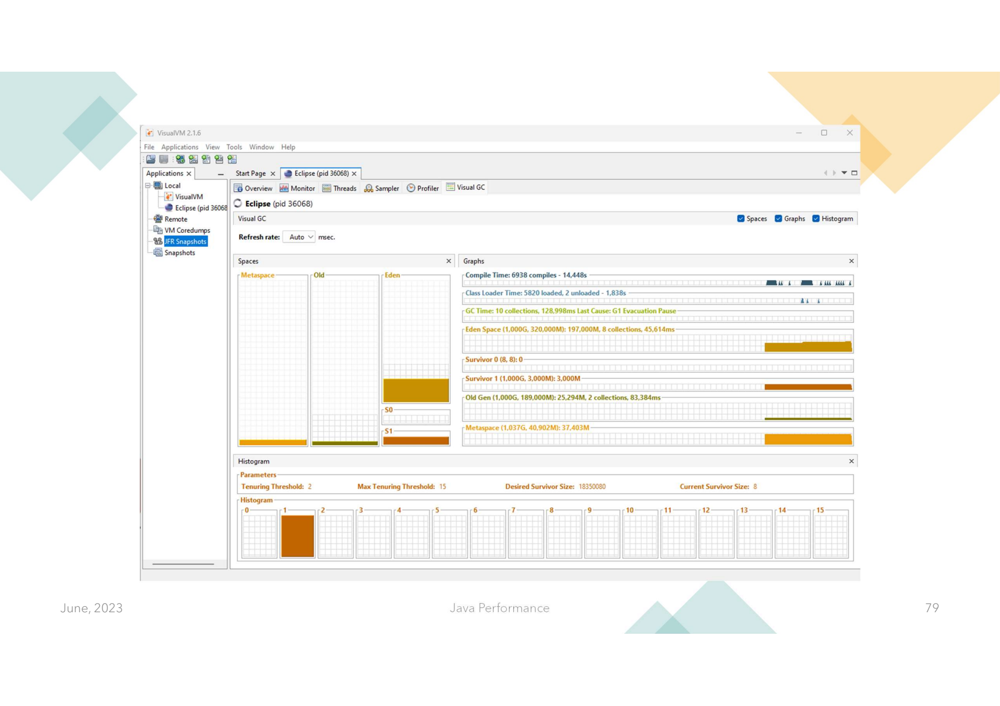
Immagine: Schermata di VisualVM, scheda Visual GC, che mostra memoria e garbage collection di un'applicazione Eclipse.
Descrizione. Screenshot della finestra di VisualVM 2.1.6 (pagina 79 del corso Java Performance, giugno 2023). Nella colonna sinistra c'è l'elenco delle applicazioni (Local: VisualVM ed Eclipse; Remote, VM Coredumps, JFR Snapshots, Snapshots). Nella scheda "Visual GC" del processo Eclipse si vedono tre pannelli. "Spaces": colonne verticali per Metaspace, Old ed Eden, più due riquadri S0 e S1, riempite in parte (Eden è riempita per circa un quinto, le altre quasi vuote). "Graphs": grafici temporali con i valori numerici indicati nell'etichetta. "Histogram": parametri di tenuring e quindici caselle numerate da 0 a 15, di cui solo la casella 1 è piena.
Testo contenuto nell’immagine
VisualVM 2.1.6
Menu: File, Applications, View, Tools, Window, Help
Applications: Local (VisualVM, Eclipse (pid 36068)), Remote, VM Coredumps, JFR Snapshots, Snapshots
Class Loader Time: 5820 loaded, 2 unloaded - 1,838s
GC Time: 10 collections, 128,998ms Last Cause: G1 Evacuation Pause
Eden Space (1,000G, 320,000M): 197,000M, 8 collections, 45,614ms
Survivor 0 (8, 8): 0
Survivor 1 (1,000G, 3,000M): 3,000M
Old Gen (1,000G, 189,000M): 25,294M, 2 collections, 83,384ms
Metaspace (1,037G, 40,902M): 37,403M
Histogram — Parameters: Tenuring Threshold: 2; Max Tenuring Threshold: 15; Desired Survivor Size: 18350080; Current Survivor Size: 8
Istogramma: caselle da 0 a 15; la casella 1 è riempita.
Piè di pagina: June, 2023 · Java Performance · 79
Memoria e GC
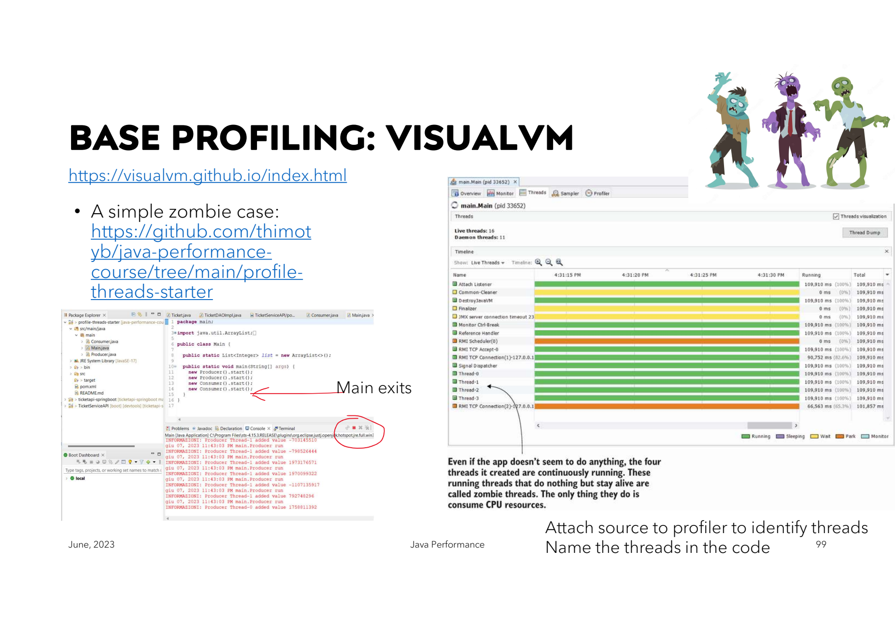
Immagine: Slide "Base profiling: VisualVM" con screenshot dell'IDE e della scheda Threads di VisualVM che mostra thread "zombie".
Descrizione. Screenshot di una slide del corso Java Performance (pagina 99). In alto a destra tre cartoni animati di zombie, a richiamare i "zombie thread". A sinistra, sotto il titolo, un link a VisualVM e un punto elenco con il link a un esempio su GitHub. Sotto, uno screenshot di un IDE Eclipse con il progetto "profile-threads-starter", il file Main.java aperto e la console con messaggi di log in rosso; una freccia rossa con la scritta "Main exits" indica la fine del metodo main e un cerchio rosso evidenzia il pulsante rosso di stop della console, ancora attivo. A destra, la scheda Threads di VisualVM per il processo main.Main: l'elenco dei thread con barre orizzontali nel tempo, quasi tutte verdi (running) per 109.910 ms, qualche barra gialla (wait) o arancione (park). Una freccia collega il testo esplicativo ai thread Thread-0, Thread-1, Thread-2 e Thread-3 sempre in esecuzione.
Testo contenuto nell’immagine
BASE PROFILING: VISUALVM
https://visualvm.github.io/index.html
A simple zombie case: https://github.com/thimotyb/java-performance-course/tree/main/profile-threads-starter
Scheda VisualVM Threads — main.Main (pid 33652): Live threads: 16; Daemon threads: 11; pulsanti Thread Dump e Threads visualization.
Thread elencati (colonne Running e Total): Attach Listener 109,910 ms (100%); Common-Cleaner 0 ms (0%); DestroyJavaVM 109,910 ms (100%); Finalizer 0 ms (0%); JMX server connection timeout 23; Monitor Ctrl-Break 109,910 ms (100%); Reference Handler 109,910 ms (100%); RMI Scheduler(0) 0 ms (0%); RMI TCP Accept-0 109,910 ms (100%); RMI TCP Connection(1)-127.0.0.1 90,752 ms (82,6%); Signal Dispatcher 109,910 ms (100%); Thread-0, Thread-1, Thread-2, Thread-3 109,910 ms (100%) ciascuno; RMI TCP Connection(2)-127.0.0.1 66,563 ms (65,3%).
Legenda: Running, Sleeping, Wait, Park, Monitor.
Testo esplicativo: "Even if the app doesn't seem to do anything, the four threads it created are continuously running. These running threads that do nothing but stay alive are called zombie threads. The only thing they do is consume CPU resources."
In basso a destra: "Attach source to profiler to identify threads. Name the threads in the code."
Piè di pagina: June, 2023 · Java Performance · 99
Thread e stato
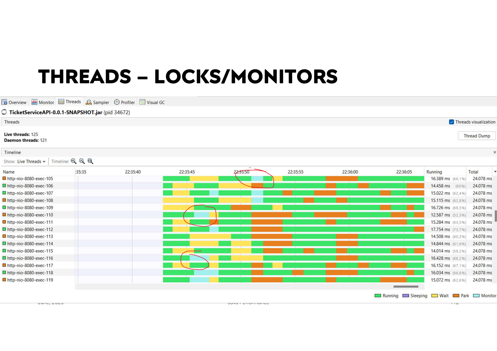
Immagine: Slide "Threads - Locks/Monitors": scheda Threads di VisualVM con molti thread http-nio e fasi di attesa evidenziate con cerchi rossi.
Descrizione. Screenshot di una slide del corso Java Performance (pagina 112) che riproduce la scheda Threads di VisualVM per l'applicazione TicketServiceAPI-0.0.1-SNAPSHOT.jar. Mostra 125 thread attivi, di cui 121 daemon. La linea temporale elenca i thread http-nio-8080-exec-105 … 119 e per ciascuno una barra colorata nel tempo: verde per Running, viola Sleeping, giallo Wait, arancione Park, azzurro Monitor. Quattro zone, in cui compaiono tratti azzurri (thread bloccati su un monitor, cioè in attesa di un lock), sono cerchiate a mano in rosso. A destra, per ogni thread, il tempo in esecuzione e il totale (24.078 ms).
Threads — Live threads: 125; Daemon threads: 121; pulsanti "Threads visualization" e "Thread Dump"
Timeline — Show: Live Threads; orari da 22:35:35 a 22:36:05
Thread, tempo Running e Total: http-nio-8080-exec-105 16.389 ms (68,1%); -106 14.458 ms (60%); -107 15.022 ms (62,4%); -108 15.115 ms (62,8%); -109 16.726 ms (69,5%); -110 12.587 ms (52,3%); -111 15.284 ms (63,5%); -112 17.754 ms (73,7%); -113 14.508 ms (60,3%); -114 14.844 ms (61,6%); -115 14.014 ms (58,2%); -116 16.428 ms (68,2%); -117 16.152 ms (67,1%); -118 16.034 ms (66,6%); -119 15.072 ms (62,6%). Total: 24.078 ms per tutti.
Legenda: Running, Sleeping, Wait, Park, Monitor.
Lock e profiler
Correlare timeline, heap, GC, thread e metodi: il profiler formula ipotesi, non sostituisce le misure.
Java Performance Course v1, pp. 79, 99 e 111-113
Slide 24. .NET: linguaggi, runtime e servizi cloud
Durata prevista: 18 minuti.
.NET è una piattaforma gratuita, open source e multipiattaforma: runtime, librerie, compilatori, SDK e stack applicativi.
Dal sorgente all’esecuzione
Cinque riquadri sovrapposti, con una freccia verso il basso tra l’uno e l’altro:
Linguaggi: C#, F#, Visual Basic.
Compiler → CIL + metadata (assembly).
CoreCLR / CLR, il runtime.
JIT, GC (garbage collector), type system, threading.
Sistemi operativi e architetture: Windows, Linux, macOS; x64 e Arm64.
Componenti che completano la piattaforma
Quattro riquadri affiancati: Librerie, SDK + CLI, NuGet, ASP.NET Core.
Dalla piattaforma al deployment Azure
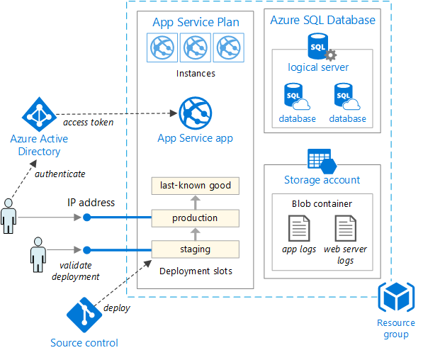
Immagine: Diagramma di architettura Azure: App Service con slot di deployment, Azure SQL Database, Storage account, Azure Active Directory e controllo del codice sorgente.
Descrizione. Diagramma ufficiale Microsoft di un'applicazione web su Azure, racchiuso in un grande riquadro tratteggiato etichettato "Resource group". Dentro il riquadro, a sinistra, c'è l'"App Service Plan" che contiene alcune "Instances" (tre icone) e l'"App Service app"; in basso nello stesso plan ci sono i "Deployment slots": "staging", "production" e "last-known good", con frecce verso l'alto che indicano lo scambio (swap) da staging a production e poi a last-known good. A destra, due riquadri: "Azure SQL Database" con un "logical server" e due "database", e "Storage account" con un "Blob container" che contiene "app logs" e "web server logs". All'esterno, a sinistra: "Azure Active Directory", che fornisce un "access token" all'App Service app dopo che l'utente si è autenticato ("authenticate"); un utente che raggiunge la produzione tramite un indirizzo IP ("IP address"); un secondo utente che "valida il deployment" ("validate deployment") sullo slot di staging; e "Source control", che esegue il "deploy" verso lo slot di staging.
Testo contenuto nell’immagine
App Service Plan; Instances; App Service app; Deployment slots: last-known good, production, staging; Azure SQL Database: logical server, database, database; Storage account: Blob container, app logs, web server logs; Azure Active Directory; access token; authenticate; IP address; validate deployment; deploy; Source control; Resource group.
App Service esegue l’app .NET e aggiunge scaling, slot, identità e servizi dati gestiti.
Quattro riquadri sovrapposti, con una freccia verso il basso tra l’uno e l’altro, dal client ai dati:
Client: web e mobile.
ASP.NET Core: API e autenticazione.
Servizi: business logic (logica applicativa).
Dati / Cloud: SQL e Azure.
Sotto lo schema una nota: trasversali a tutti i livelli ci sono dependency injection (DI), logging, configurazione e osservabilità.
Slide 26. Java e .NET
Durata prevista: 15 minuti.
Due riquadri affiancati a confronto.
Java / JVM
Ecosistema JVM
Framework e standard enterprise
Ampia base installata
.NET / CLR
Toolchain integrata
Ecosistema Microsoft
Runtime multipiattaforma
Slide 27. REST: risorse, metodi e risposte HTTP
Durata prevista: 15 minuti.
Immagine: Icona decorativa rossa di una finestra di browser vuota con tre puntini in alto a destra.
Descrizione. Icona stilizzata, senza testo, che rappresenta la finestra di un browser: cornice rossa con tre puntini bianchi nella barra del titolo e un'area bianca vuota. Ha solo funzione decorativa e non porta informazioni.
Schema: una risorsa, quattro metodi, quattro risposte
Un client (rappresentato dall’icona di una finestra di browser) accede alla risorsa /cittadini/472, cioè una risorsa identificata da un URI. I metodi HTTP disponibili sono quattro; ogni metodo corrisponde a un’operazione:
Metodo
Operazione
GET
legge
POST
crea
PUT/PATCH
aggiorna
DELETE
elimina
Il server risponde con un codice di stato HTTP:
Codice
Significato
200
OK
404
non trovata
429
troppi accessi
503
non disponibile
REST trasferisce rappresentazioni dello stato tramite il protocollo HTTP.
Slide 28. Python: dal dato al modello, fino all'AI generativa
Durata prevista: 12 minuti.
Schema: dal dato al modello
Quattro riquadri in sequenza da sinistra a destra, collegati da frecce:
Slide 31. Visualizzare con Seaborn: scegliere il grafico per la domanda
Durata prevista: 18 minuti.
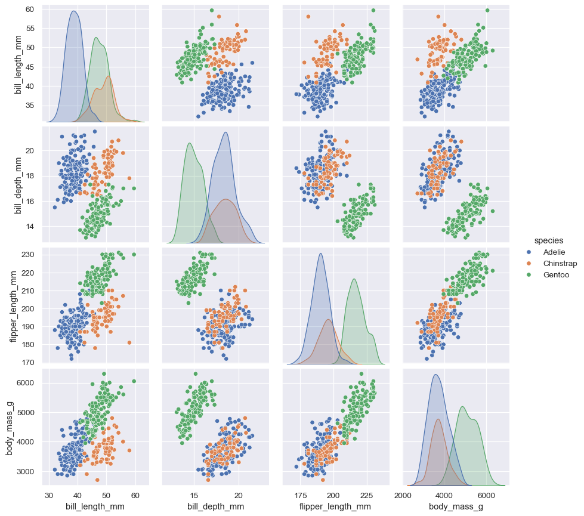
Immagine: Griglia 4 per 4 di grafici Seaborn (pairplot) sul dataset dei pinguini, con tre specie in colori diversi.
Descrizione. Esempio ufficiale di Seaborn: una matrice di grafici 4 per 4 che confronta quattro misure dei pinguini: bill_length_mm (lunghezza del becco), bill_depth_mm (profondità del becco), flipper_length_mm (lunghezza della pinna) e body_mass_g (massa corporea). Le misure sono sugli assi, sia in riga sia in colonna. Fuori dalla diagonale ogni grafico è un diagramma a dispersione (scatter plot) di una coppia di misure; sulla diagonale ci sono le curve di densità di ogni singola misura. I punti sono colorati per specie: Adelie in blu, Chinstrap in arancione, Gentoo in verde (legenda "species" a destra). Si vede che le tre specie formano nuvole di punti in gran parte separate: ad esempio i Gentoo hanno pinne più lunghe e massa maggiore, e becco meno profondo, degli Adelie.
Testo contenuto nell’immagine
Assi: bill_length_mm, bill_depth_mm, flipper_length_mm, body_mass_g (in riga e in colonna).
Legenda "species": Adelie (blu), Chinstrap (arancione), Gentoo (verde).
Didascalia. RELAZIONI
sns.pairplot(data=df, …)
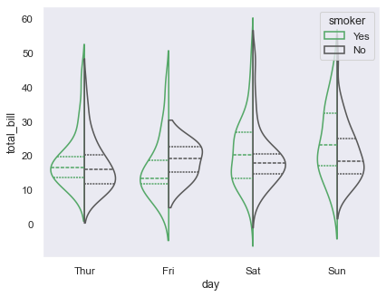
Immagine: Grafico Seaborn a violino della spesa totale per giorno della settimana, diviso tra fumatori e non fumatori.
Descrizione. Esempio ufficiale di Seaborn: un grafico a violino (violin plot) con l'asse orizzontale "day" (Thur, Fri, Sat, Sun) e l'asse verticale "total_bill" (da circa 0 a 60). Per ogni giorno c'è una forma divisa in due metà: la metà verde a sinistra rappresenta i clienti fumatori ("smoker: Yes") e quella grigio scuro a destra i non fumatori ("No"). La larghezza di ogni metà mostra la densità dei conti; le linee tratteggiate interne segnano i quartili. In tutti i giorni la maggior parte dei conti si colloca tra circa 10 e 25, con code più lunghe verso valori alti, fino a circa 50-60 nel fine settimana e il giovedì.
Testo contenuto nell’immagine
Asse x: day (Thur, Fri, Sat, Sun). Asse y: total_bill. Legenda "smoker": Yes (verde), No (grigio scuro).
Didascalia. DISTRIBUZIONI
sns.violinplot(data=df, …)
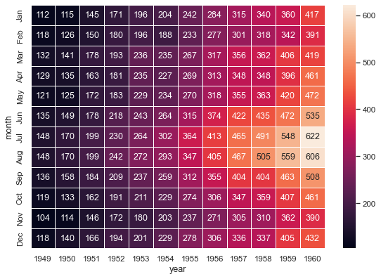
Immagine: Mappa di calore Seaborn con i passeggeri aerei per mese e anno dal 1949 al 1960, con i valori scritti in ogni cella.
Descrizione. Esempio ufficiale di Seaborn: una mappa di calore (heatmap) con i mesi (da gennaio a dicembre) sulle righe e gli anni dal 1949 al 1960 sulle colonne. In ogni cella è scritto il numero di passeggeri; il colore va dal viola scuro, per i valori bassi, al color pesca chiaro per quelli alti (la barra dei colori a destra va da circa 100 a 600). Il numero cresce da sinistra a destra, cioè anno dopo anno, e con un picco in estate (luglio e agosto): il valore minimo è 104 (novembre 1949), il massimo è 622 (luglio 1960).
Slide 32. Machine Learning in Python: dai feature al risultato
Durata prevista: 20 minuti.
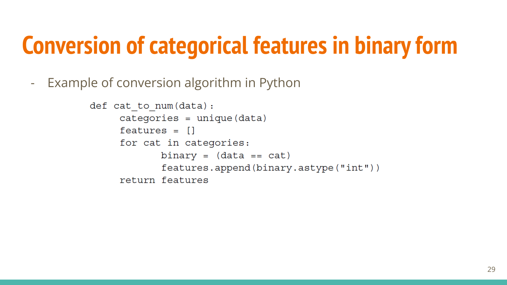
Immagine: Slide "Conversion of categorical features in binary form" con una funzione Python che trasforma una variabile categorica in colonne binarie.
Descrizione. Screenshot della slide 29 del corso "Practical Machine Learning", in inglese. Contiene il titolo, una frase introduttiva e un breve listato in Python: la funzione cat_to_num prende i dati, ricava le categorie distinte, e per ciascuna categoria costruisce una colonna binaria (1 se il dato è uguale alla categoria, 0 altrimenti); restituisce l'elenco delle colonne.
Testo contenuto nell’immagine
Conversion of categorical features in binary form
Example of conversion algorithm in Python
def cat_to_num(data):
categories = unique(data)
features = []
for cat in categories:
binary = (data == cat)
features.append(binary.astype("int"))
return features
Numero di slide: 29
PREPARAZIONE: categorie → feature numeriche
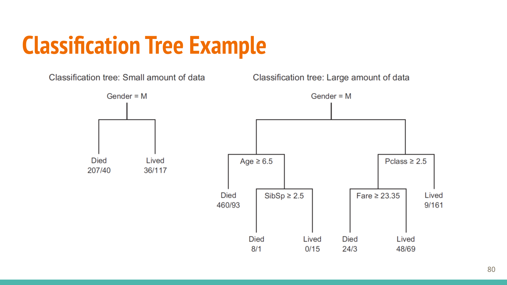
Immagine: Slide "Classification Tree Example": due alberi di classificazione sui passeggeri del Titanic, uno con pochi dati e uno con molti dati.
Descrizione. Screenshot della slide 80 del corso "Practical Machine Learning". Affianca due alberi decisionali che predicono se un passeggero del Titanic è sopravvissuto. Ogni nodo interno pone una domanda; le foglie riportano la classe prevista e due numeri (morti/sopravvissuti nel gruppo). L'albero a sinistra (pochi dati) ha un solo test, sul genere: a una diramazione "Died 207/40", all'altra "Lived 36/117". L'albero a destra (molti dati) parte dallo stesso test sul genere, poi ramifica con altre domande su età, numero di fratelli/coniugi, classe del biglietto e tariffa. L'albero di destra è più profondo e più preciso; entrambi mostrano come più dati permettano più divisioni.
Testo contenuto nell’immagine
Classification Tree Example
Albero di sinistra — "Classification tree: Small amount of data":
Gender = M
ramo sinistro → Died 207/40
ramo destro → Lived 36/117
Albero di destra — "Classification tree: Large amount of data":
Gender = M
ramo sinistro → Age ≥ 6.5
ramo sinistro → Died 460/93
ramo destro → SibSp ≥ 2.5
ramo sinistro → Died 8/1
ramo destro → Lived 0/15
ramo destro → Pclass ≥ 2.5
ramo sinistro → Fare ≥ 23.35
ramo sinistro → Died 24/3
ramo destro → Lived 48/69
ramo destro → Lived 9/161
Numero di slide: 80
MODELLO: regole apprese → albero interpretabile
Practical Machine Learning, slide 29 e 80
Slide 33. Dal notebook all'albero: addestrare e leggere il modello
Durata prevista: 20 minuti.
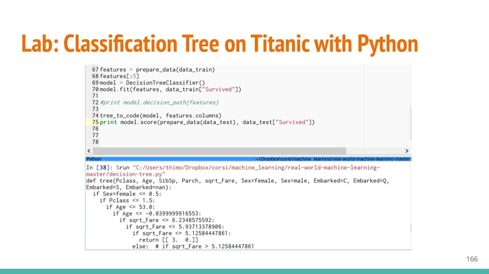
Immagine: Slide "Lab: Classification Tree on Titanic with Python" con codice Python di un albero decisionale e l'albero stampato come funzione.
Descrizione. Screenshot della slide 166 del corso "Practical Machine Learning". Riproduce un ambiente di sviluppo Python (stile Spyder): in alto l'editor con codice che prepara i dati, addestra un DecisionTreeClassifier sul campo "Survived" e ne stampa il punteggio sul dataset di prova; in basso la console che esegue il file decision-tree.py e stampa l'albero come funzione Python con una serie di istruzioni "if" annidate sulle caratteristiche (Pclass, Age, SibSp, Parch, sqrt_Fare, Sex, Embarked).
In [38]: %run "C:/Users/thimo/Dropbox/corsi/machine_learning/real-world-machine-learning-master/decision-tree.py"
def tree(Pclass, Age, SibSp, Parch, sqrt_Fare, Sex=female, Sex=male, Embarked=C, Embarked=Q, Embarked=S, Embarked=nan):
if Sex=female <= 0.5:
if Pclass <= 1.5:
if Age <= 53.0:
if Age <= -0.0399999916553:
if sqrt_Fare <= 6.2348575592:
if sqrt_Fare <= 5.93713378906:
if sqrt_Fare <= 5.12584447861:
return [[ 3. 0.]]
else: # if sqrt_Fare > 5.12584447861
Numero di slide: 166
PYTHON: fit del classificatore
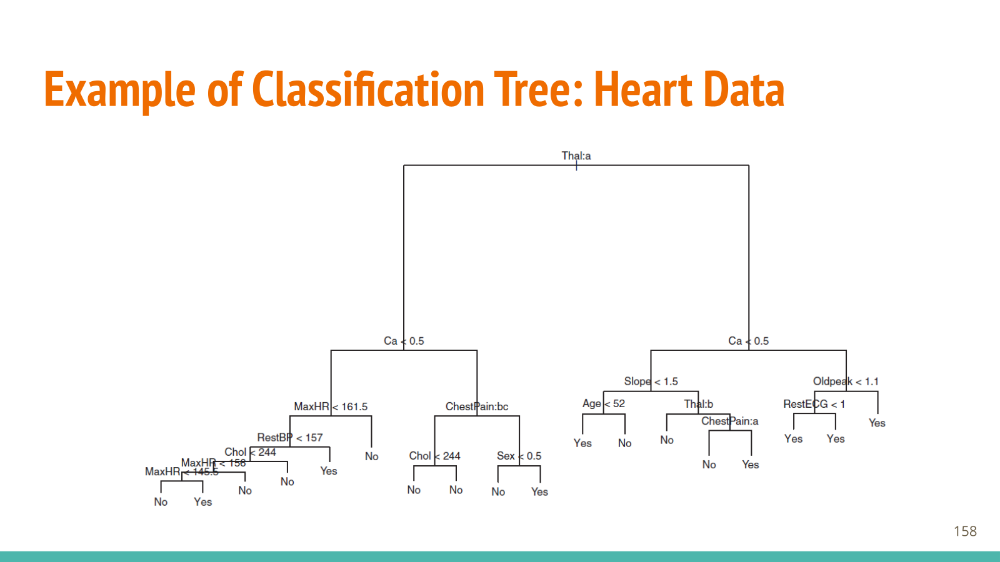
Immagine: Slide "Example of Classification Tree: Heart Data": un grande albero decisionale sui dati di malattie cardiache con foglie Yes e No.
Descrizione. Screenshot della slide 158 del corso "Practical Machine Learning". Mostra un albero di classificazione molto ramificato costruito sul dataset "Heart" (diagnosi di malattia cardiaca). La radice è il test "Thal:a" ("Thal" è un esame del cuore); ogni ramo prosegue con altri test su variabili cliniche e termina in foglie "Yes" o "No" (malattia sì o no). Alcune etichette nell'angolo in basso a sinistra si sovrappongono tra loro. Serve a mostrare la leggibilità e al tempo stesso la complessità degli alberi decisionali.
Testo contenuto nell’immagine
Example of Classification Tree: Heart Data
Radice: Thal:a
Sottoalbero sinistro: Ca < 0.5 → MaxHR < 161.5 (→ RestBP < 157 → Chol < 244 → MaxHR < 156 → MaxHR < 145.5 → No / Yes; altre foglie No, No, Yes) e ChestPain:bc (→ Chol < 244 → No, No; Sex < 0.5 → No, Yes); foglia No.
Sottoalbero destro: Ca < 0.5 → Slope < 1.5 (→ Age < 52 → Yes, No; Thal:b → No, ChestPain:a → No, Yes) e Oldpeak < 1.1 (→ RestECG < 1 → Yes, Yes; foglia Yes).
Numero di slide: 158
RISULTATO: split, soglie e foglie
Practical Machine Learning, slide 158 e 166
Slide 34. AI generativa con Python: un'applicazione attorno al modello
Slide 36. La Console JavaScript: provare, osservare, diagnosticare
Durata prevista: 15 minuti.
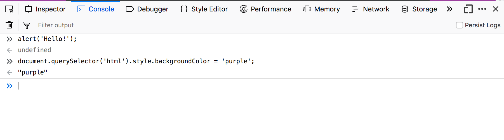
Immagine: Console degli strumenti per sviluppatori del browser Firefox con due comandi JavaScript: un alert e il cambio del colore di sfondo in viola.
Descrizione. Screenshot della barra degli strumenti per sviluppatori di Firefox, con la scheda "Console" selezionata (le altre schede sono Inspector, Debugger, Style Editor, Performance, Memory, Network, Storage). Nella console sono stati digitati due comandi: il primo mostra una finestra di avviso con il testo "Hello!" e restituisce "undefined"; il secondo imposta a viola lo sfondo dell'elemento html della pagina e restituisce "purple". In fondo c'è la riga di input vuota con il cursore.
Slide 37. Can I Use: decidere se una funzionalità Web è utilizzabile
Durata prevista: 12 minuti.
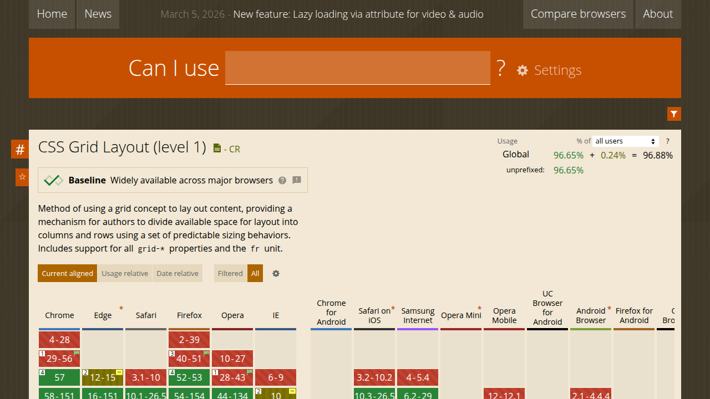
Immagine: Pagina del sito Can I use dedicata a CSS Grid Layout, con il 96,88% di utenti globali supportati e la tabella di compatibilità dei browser.
Descrizione. Screenshot del sito "Can I use" (caniuse.com) aggiornato al 5 marzo 2026, con in alto il menu (Home, News, Compare browsers, About) e il campo di ricerca "Can I use ... ?". Il titolo della pagina è "CSS Grid Layout (level 1)". Un'etichetta "Baseline" segnala che la funzionalità è "Widely available across major browsers" (ampiamente disponibile nei principali browser). A destra i dati di utilizzo globale: 96,65% di supporto senza prefisso, più 0,24% parziale, per un totale del 96,88%. Sotto la descrizione c'è la tabella di compatibilità per browser: sulle colonne Chrome, Edge, Safari, Firefox, Opera, IE, Chrome per Android, Safari su iOS, Samsung Internet, Opera Mini, Opera Mobile, UC Browser, Android Browser, Firefox per Android; le celle verdi indicano le versioni che supportano la funzionalità (ad esempio Chrome dalla 57), le celle rosse quelle che non la supportano (ad esempio Chrome 4-28, IE 6-9), quelle giallo scuro il supporto parziale (ad esempio Edge 12-15, IE 10). La parte visibile della tabella si interrompe in basso.
Testo contenuto nell’immagine
Home · News · March 5, 2026 - New feature: Lazy loading via attribute for video & audio · Compare browsers · About
Can I use ______ ? Settings
CSS Grid Layout (level 1) - CR
Baseline: Widely available across major browsers
Usage % of all users — Global 96.65% + 0.24% = 96.88%; unprefixed: 96.65%
Method of using a grid concept to lay out content, providing a mechanism for authors to divide available space for layout into columns and rows using a set of predictable sizing behaviors. Includes support for all grid-* properties and the fr unit.
Schede: Current aligned · Usage relative · Date relative · Filtered · All
Browser: Chrome, Edge, Safari, Firefox, Opera, IE, Chrome for Android, Safari on iOS, Samsung Internet, Opera Mini, Opera Mobile, UC Browser for Android, Android Browser, Firefox for Android.
React Native official documentation: Core Components
Slide 41. Expo Snack: una app React Native modificabile nel browser
Durata prevista: 18 minuti.
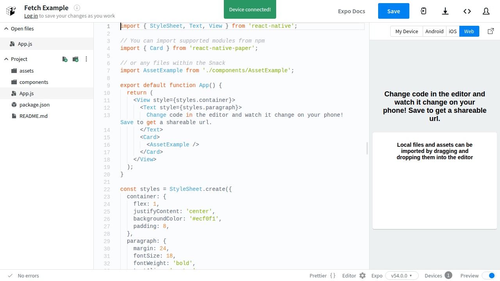
Immagine: Expo Snack con il progetto "Fetch Example": a sinistra il codice React Native di App.js, a destra l'anteprima web.
Descrizione. Screenshot dell'editor online Expo Snack con il progetto "Fetch Example". In alto una barra con il nome del progetto, un messaggio verde "Device connected!", i pulsanti "Expo Docs" e "Save" e altre icone. Colonna sinistra: elenco dei file (Open files: App.js; Project: assets, components, App.js, package.json, README.md). Al centro l'editor con il codice di App.js, un piccolo componente React Native che mostra un testo e una scheda (Card). A destra il pannello di anteprima, con le schede My Device, Android, iOS e Web (selezionata): mostra un testo in grassetto centrato e, sotto, una scheda bianca. In basso la barra di stato: "No errors", Prettier, Editor, versione Expo v54.0.0, Devices 1, Preview attivo.
Testo contenuto nell’immagine
Fetch Example — Login to save your changes as you work
Expo Docs · Save
Open files: App.js. Project: assets, components, App.js, package.json, README.md
Codice di App.js (righe 1-32):
import { StyleSheet, Text, View } from 'react-native';
// You can import supported modules from npm
import { Card } from 'react-native-paper';
// or any files within the Snack
import AssetExample from './components/AssetExample';
export default function App() {
return (
<View style={styles.container}>
<Text style={styles.paragraph}>
Change code in the editor and watch it change on your phone! Save to get a shareable url.
</Text>
<Card>
<AssetExample />
</Card>
</View>
);
}
const styles = StyleSheet.create({
container: {
flex: 1,
justifyContent: 'center',
backgroundColor: '#ecf0f1',
padding: 8,
},
paragraph: {
margin: 24,
fontSize: 18,
fontWeight: 'bold',
Anteprima (Web): "Change code in the editor and watch it change on your phone! Save to get a shareable url." e, nella scheda: "Local files and assets can be imported by dragging and dropping them into the editor".
Barra di stato: No errors · Prettier · Editor · Expo v54.0.0 · Devices 1 · Preview
Prova in tre passi
Modifica il file App.js.
Scegli l’anteprima Android o iOS.
Osserva l’anteprima.
Stesso progetto, feedback immediato su più piattaforme.